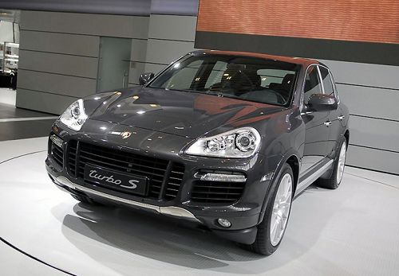

太不照顾OX的情绪了 @ Mar 04, 2009
上个周末，从上海开车到家已经是周日凌晨一点多钟。
把车停进车位，发现隔壁车位上停了一辆黑色卡宴 Turbo S，没上牌，新车的光泽在黑夜中闪烁着诱人的光芒。之前这个邻居开一辆黑色的沃尔沃S80，现在添加了一头大怪兽，4.8T 550马力 V8，0-100加速 4.8秒......
太不照顾OX的情绪了，要OX每天自惭形秽停在怪兽旁边么？
太不照顾有理想的年轻人了，一下子买235万的车，显得俺们的理想那么的可怜~颤抖！
甲：“借你把刀去划漆。”
乙：“在他旁边停个拖拉机，冒黑烟、烧劈柴、动静特大那种，每天热车半小时。”
丙：“把OX停到自行车库里。”
丁：“颤抖的原因是理想那么远，现实这么近。”

12 Responses to “太不照顾OX的情绪了”
2009-03-05
这是新款Cayenne Turbo S，作为Cayenne的高性能版本的SUV，4.5升8缸双涡轮增压引擎。最大功率和扭矩分别提高到了521bhp与720N.m。
我们都知道进口车有高达25%的关税以及消费税、购置税等等，一辆普通的进口轿车累积税率高达70%。所以，国内买一辆进口车的价格，可以在北美买两辆同款车。
Cayenne的价格区间在CNY88.80-235.00 万，从3.6到Turbo S分5种规格。
2009-03-05
cayenne turbo标价是93,700美元，现在这种经济形式下没多少人能买起，一般要占到白领双职工家庭税前收入一半以上，除非很爱车的人才买，LEXUS RX350, ACURA MDX，BMW X5 都是不错的SUV，价钱4-5万，象我们这种家庭还能承受，美国华人第一是买房子，开本田，丰田的人很多，房子付的差不多了才会买LEXUS ACURA BMW， LINCOLN。
2009-03-05
turbo和turbo S是两个规格，turbo S在北美卖多少银子？还是西方社会生活质量高，生活的性价比也比国内合理。
2009-03-05
当速度瞬间到120左右的时候,眼睛都会直了
好车就是好车
2009-03-05
美国收入除了税以外，自己还要买养老金，小孩上大学的教育基金，房子就是大头了，好区好学校房子都很贵，华人都硬着头皮往里挤，所以，房子就占了收入的一半以上，很多人基本也就开两田，好像也不是特别羡慕开好车的人，觉得很不值得。也没觉得开porsche，BMW就比别人成功。
2009-03-05
YAHOO没见到turbo S，turbo已经是最高级的了，看来金融危机老美已经很穷了。
2009-03-05
看这个连接:http://car.autohome.com.cn/3859/index.html
http://auto.sohu.com/20080421/n256421530.shtml
2009-03-05
对于不喜欢车的人来讲，开拖拉机也可以的。
但是喜欢车的人就不同了，就象喜欢电子产品的人，不停的追逐新上市的电子产品。这么贵的车，我们也就是看看，YY一下。
2009-03-05
好东西谁都喜欢，但是，就挣那些钱，要真想买也能买的起，算下来每月也就多资出400-500，不过，就我们目前的收入来说还是有点高了，刚花了2000美元买了个苹果LAPTOP，好多人都觉得好CRAZY，大部分美国人认为700-800美元的电脑已经不错了。国内用2000-3000美元苹果LAPTOP很多。中国人在奢侈品上花钱确实多。看看中国政府也能花钱，奥运花多少钱，我倒觉得不如多建一些中小学，象美国一样一班30个学生，花钱在体育文艺的基础教育，比如学区之间多一些体育比赛文艺活动，多建一些社区医院，对医生进行培训，好多事情，在国外给人感觉中国政府钱多的没处花，到国外买些没用的东西
2009-03-06
楼下地库里什么型都有，让别人花钱自己看，是享受。^_^
这几天50中门口常见辆大红JAGUAR，估计南京仅此一辆，停在拥挤天福园地面上，可惜
2009-03-09
最近这半年每个月回国一次，而且每次都会呆一两个星期。最大的一个发现就是路上的好车越来越多了。去年去了5次香港，每次因为图方便，都住在中环的君悦。 一个发现就是酒店门口的好车很多，法拉利，兰博基里，基本上每天都有。这次在上海，一出酒店就看到一辆宾利。上海到南京的高速上一路看到了好几辆卡宴。其实在美国这车也没啥，天天上班的路上不知道有多少辆。想要买，自己不眨眼也买得起。只是觉得开起来磕磕碰碰的，不如辆佳美让人不心疼。在南京的时候好友开了一辆香槟色的卡宴带我出去转转。去了趟水游城，和夫子庙，路人眼里的感觉，和停车场管理员的态度让你知道， 在中国开两好车，你的感觉要好得不的了。是你在美国永远也体会不到的。
2009-03-09
哦？~！好车就象穿鞋，舒服不舒服只有自己知道，别人看着再好的鞋，自己穿着不舒服，又如何？车，也是一样吧~爱车的人总是希望能有不同体验的，对吗？我就喜欢车，如果能有不同的好车让我换着开开，会很开心。国内人看到好车多看两眼正常吧，见的少，自然要多看看喽。我也是第一次看到TURBO S，看了好多次呢：D
有一些看上去不错的车，但仅仅是看上去，大多数人对汽车外形的关注比对配置、性能更多一些。
Leave A Reply
存档只读，评论已关闭。